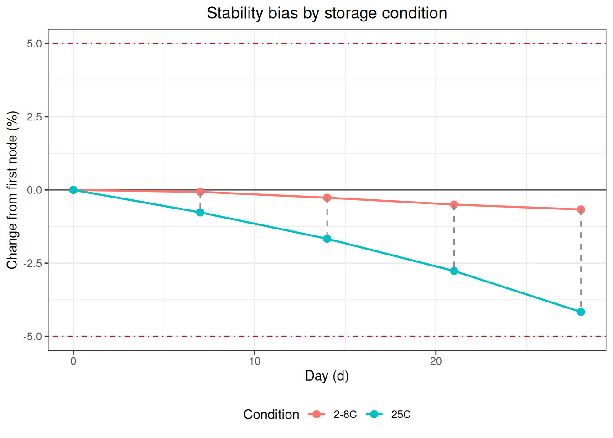
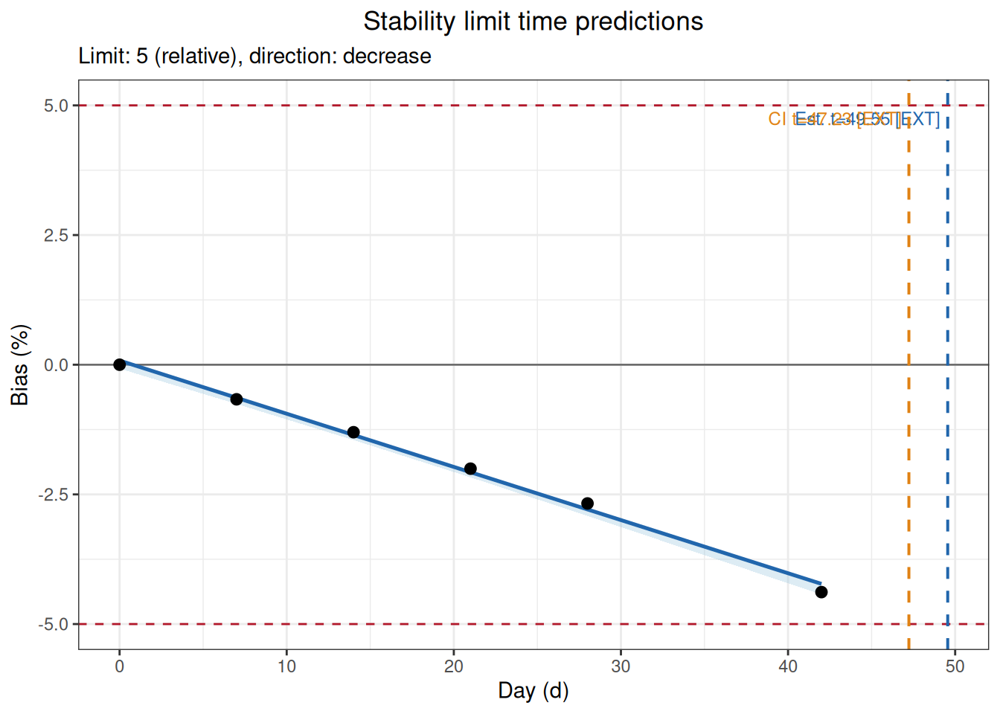

Code
library(ivdtools)
library(readr)Stability studies evaluate the extent to which measurement results change over time for reagents, calibrators, or quality-control materials under specified storage, transport, or use conditions. This document demonstrates how to use the ivdtools package to establish a stability analysis plan, complete node bias, regression of trends within and between conditions relative to the first node, prediction of the time to reach an allowable limit, Arrhenius accelerated stability analysis, and mean kinetic temperature (MKT) computation.
library(ivdtools)
library(readr)All data in this document are deterministic teaching examples used only to validate the analysis workflow. The 5% allowable drift, 10% accelerated degradation limit, target temperature, and activation energy in the examples are not universal acceptance criteria; formal studies must use parameters pre-specified in the protocol, risk assessment, or applicable standards. Whether to choose a concentration value or a signal value as the response should be decided according to the protocol.
| Function | Main purpose | Key input or output |
|---|---|---|
stability_plan() |
Plan the minimum number of time points for a regression series | Allowable drift, variability, replicates, expected drift and power |
stability_bias() |
Compute absolute/relative bias of each condition relative to the first node | Node summary, within-condition bias, between-condition bias and limit status |
stability_regression() |
Regression of a single-condition trend or test/reference paired bias | Slope, one-sided confidence limit, node results and diagnostics |
stability_time() |
Predict the time when the point estimate or one-sided confidence limit reaches the allowable bias | Predicted time, whether extrapolated, and search range |
arrhenius() |
Extrapolate the shelf life at target temperature from degradation rates at multiple elevated temperatures | Kinetic order, rate, activation energy and predicted shelf life |
mkt() |
Compute equally spaced or time-weighted mean kinetic temperature | Per-probe and combined MKT |
stability_regression() supports two modes:
mode = "self": regress the measurement results of a single condition over time;mode = "compare": compute the bias of the test condition relative to the reference condition at matched time points, then regress the bias over time.Before analysis, clarify the condition mapping, time unit, bias scale, expected direction of change, and allowable limits. Conclusions about acceptability can be drawn only when the protocol provides acceptance criteria.
Suppose the study protocol specifies an allowable relative drift of 5%, an expected drift of 2.5%, repeatability variability of 1.5%, and a target power of 90%. Compare the minimum number of time points needed when measuring 1, 2, or 3 times at each time point:
plan <- ivdtools::stability_plan(
allowable_drift = 5,
variability = 1.5,
replicates = c(1, 2, 3),
expected_drift = 2.5,
power = 0.9,
mode = "simple",
bias_type = "relative"
)
print(plan)
Stability Study Time-Point Plan
Allowable drift: 5.0000; expected drift: 2.5000
Success target: 90%; method: CLSI EP25 Appendix A Table A2
Replicates Residual Allow/Resid Min nodes
------------------------------------------------
1 1.5000 3.3333 n/a
2 1.0607 4.5455 28
3 0.8660 5.7471 18
n/a -- No feasible entry in EP25 table.bias_data <- read_csv(
"./data/stability-bias-example.csv",
show_col_types = FALSE
)
bias_datadim(bias_data)[1] 30 4str(bias_data)spc_tbl_ [30 × 4] (S3: spec_tbl_df/tbl_df/tbl/data.frame)
$ Condition: chr [1:30] "2-8C" "2-8C" "2-8C" "2-8C" ...
$ Day : num [1:30] 0 0 0 7 7 7 14 14 14 21 ...
$ Replicate: num [1:30] 1 2 3 1 2 3 1 2 3 1 ...
$ Result : num [1:30] 100.2 99.8 100 99.9 100.1 ...
- attr(*, "spec")=
.. cols(
.. Condition = col_character(),
.. Day = col_double(),
.. Replicate = col_double(),
.. Result = col_double()
.. )
- attr(*, "problems")=<externalptr> Using 2-8C as the reference condition, normalize to each condition’s own first node, and evaluate whether the relative bias is within the illustrative ±5% limit:
bias_result <- ivdtools::stability_bias(
data = bias_data,
condition = "Condition",
time = "Day",
value = "Result",
reference_condition = "2-8C",
limit = 5,
bias_type = "relative",
time_unit = "d"
)
print(bias_result)
Stability Bias Analysis
Conditions: 2 (2-8C, 25C)
Reference: 2-8C
Time unit: d
Node comparisons:20
Acceptance: +/- 5.0000 (relative); 10/10 nodes passed
Within-condition bias (vs first node)
Cond Time Value Bias(%) Status
----------------------------------------------
2-8C 0.0000 100.0000 0.0000 Pass
2-8C 7.0000 99.9333 -0.0667 Pass
2-8C 14.0000 99.7333 -0.2667 Pass
2-8C 21.0000 99.5000 -0.5000 Pass
2-8C 28.0000 99.3333 -0.6667 Pass
25C 0.0000 100.0000 0.0000 Pass
25C 7.0000 99.2333 -0.7667 Pass
25C 14.0000 98.3333 -1.6667 Pass
25C 21.0000 97.2333 -2.7667 Pass
25C 28.0000 95.8333 -4.1667 Pass
Between-condition bias (reference: 2-8C)
Time Condition TestVal Bias(%)
--------------------------------------
0.0000 25C 100.0000 0.0000
7.0000 25C 99.2333 -0.7005
14.0000 25C 98.3333 -1.4037
21.0000 25C 97.2333 -2.2781
28.0000 25C 95.8333 -3.5235Within-condition bias uses each condition’s own first node as the baseline; between-condition bias compares the test and reference conditions at the same time points.
plot(bias_result)
regression_data <- read_csv(
"./data/stability-regression-example.csv",
show_col_types = FALSE
)
regression_dataCompute the relative bias of 25C relative to 2-8C at each matched time point, and regress the bias over time. The example pre-specifies that results decrease over time, so direction = "decrease" is used:
regression_result <- ivdtools::stability_regression(
data = regression_data,
time = "Day",
value = "Result",
condition = "Condition",
mode = "compare",
test_condition = "25C",
reference_condition = "2-8C",
bias_type = "relative",
direction = "decrease",
conf.level = 0.95,
limit = 5,
time_unit = "d"
)
print(regression_result)
Stability Regression
Mode: compare
Test condition: 25C
Reference: 2-8C
Fit: WLS (1/SE^2); intercept = 0.0799, slope = -0.1025
Direction: decrease
One-sided CI: 95.0%
R-squared: 0.9956
Cook distance: row(s) 6 > 1; not removed
Time ObsBias Estimate CI_limit Status
--------------------------------------------------
0.0000 0.0000 0.0799 -0.0750
7.0000 -0.6669 -0.6376 -0.7566
14.0000 -1.3013 -1.3552 -1.4522
21.0000 -2.0040 -2.0728 -2.1717
28.0000 -2.6747 -2.7904 -2.9140
42.0000 -4.3842 -4.2256 -4.4296 plot(regression_result)
The model uses a one-sided confidence limit to evaluate the least favorable direction. This example identifies a node with a large Cook’s distance, but the function does not automatically delete it; you should go back to the original records, experimental procedure, and protocol requirements, and perform an include/exclude sensitivity analysis when there is sufficient justification.
In addition to the test/reference paired regression of Example 3, mode = "self" can analyze how a single condition changes over time on its own. The regression example data is still used below, but only the 25C condition is selected; the observed_bias at each node is computed relative to that condition’s first-node mean:
self_regression_result <- ivdtools::stability_regression(
data = regression_data,
time = "Day",
value = "Result",
condition = "Condition",
mode = "self",
test_condition = "25C",
bias_type = "relative",
direction = "decrease",
conf.level = 0.95,
limit = 5,
time_unit = "d"
)
print(self_regression_result)
Stability Regression
Mode: self
Test condition: 25C
Fit: WLS (1/SE^2); intercept = 100.0849, slope = -0.1115
Direction: decrease
One-sided CI: 95.0%
R-squared: 0.9966
Cook distance: row(s) 1, 6 > 1; not removed
Time ObsBias Estimate CI_limit Status
--------------------------------------------------
0.0000 0.0000 -0.0000 -0.0000
7.0000 -0.7000 -0.7797 -0.8278
14.0000 -1.4000 -1.5594 -1.6555
21.0000 -2.2000 -2.3391 -2.4833
28.0000 -2.9667 -3.1188 -3.3110
42.0000 -4.7667 -4.6782 -4.9665 plot(self_regression_result)
The observed bias at the first node is fixed at 0; the model estimates, however, are fitted jointly from all time points and do not require the regression intercept to pass exactly through the first node. A one-sided confidence limit is used to evaluate the pre-specified least favorable direction; the illustrative ±5% limit still cannot replace the study protocol requirements.
stability_time() uses the regression object from Example 3 to compute the times at which the point estimate and the one-sided confidence limit first reach a -5% bias:
time_result <- ivdtools::stability_time(
regression_result,
limit = 5,
max_time = 90
)
print(time_result)
Stability Limit Time
Limit: 5.0000 (relative); direction: decrease
estimate 49.5548 d [EXTRAPOLATED]
one_sided_ci 47.2316 d [EXTRAPOLATED]plot(time_result)
In this example, the longest actual observation time is 42 days, while the predicted time to reach the limit exceeds the observation range, so the output is marked EXTRAPOLATED. Extrapolated results rely on the assumption that the linear trend continues beyond the unobserved interval and cannot be treated as measured stability evidence; report the extrapolation distance and uncertainty prominently, and prefer confirmation with longer actual observation data.
arrhenius_data <- read_csv(
"./data/stability-arrhenius-example.csv",
show_col_types = FALSE
)
arrhenius_dataThe example uses accelerated data at 30, 37, and 45 °C, extrapolated to 5 °C; allows a relative change of 10%, and pre-specifies the degradation direction as decreasing:
arrhenius_result <- ivdtools::arrhenius(
data = arrhenius_data,
temperature = "Temperature",
time = "Day",
value = "Result",
target_temp = 5,
order = "auto",
direction = "decrease",
limit = 10,
bias_type = "relative",
temp_unit = "C",
time_unit = "d",
conf.level = 0.95
)
print(arrhenius_result)
Arrhenius Stability Analysis
Kinetic order: zero (auto-selected)
Direction: decrease
Activation Ea: 97.159 kJ/mol
Target rate: 0.002346 /d
Limit time: 4263.7878 d [1585.3589, 11467.3633]plot(arrhenius_result)

order = "auto" selects a model from the zero-order and first-order kinetic candidates according to the implementation rules. Formal analysis should determine the candidate orders under experimental design and mechanistic knowledge, and verify the degradation direction, rate significance, extent of degradation, and model residuals at each temperature. Extrapolating from elevated temperatures to the target storage temperature may span a large range; the predicted shelf life and its interval must be interpreted together with the model assumptions, the actual time data, and validation studies.
mkt_data <- read_csv(
"./data/stability-mkt-example.csv",
show_col_types = FALSE
)
mkt_data$Timestamp <- as.POSIXct(
mkt_data$Timestamp,
format = "%Y-%m-%d %H:%M:%S",
tz = "UTC"
)
mkt_dataUsing two temperature probes and the actual time intervals, with temperature in degrees Celsius and an example activation energy of 83.144 kJ/mol:
mkt_result <- ivdtools::mkt(
data = mkt_data,
temp_cols = c("Probe_A", "Probe_B"),
time = "Timestamp",
temp_unit = "C",
ea = 83.144
)
print(mkt_result)
Mean Kinetic Temperature
Ea: 83.144 kJ/mol
Method: Time-weighted trapezoidal MKT
Probe_A 299.538 K 26.388 C
Probe_B 299.194 K 26.044 C
Combined 299.367 K 26.217 CMKT is not a simple arithmetic mean of temperature; high-temperature exposure receives greater weight through the Arrhenius relationship. Formal computations should confirm probe calibration status, time ordering, missing intervals, temperature units, exposure duration, and the activation energy assumption. MKT can only summarize temperature exposure; it cannot replace product-specific stability studies.
When different concentration levels, sample types, or lots need to be evaluated separately, you should retain the sample identifier, split the data first, and then analyze each sample with the same pre-specified parameters. Read and validate the multi-sample raw data:
multiple_samples_data <- read_csv(
"./data/stability-multiple-samples-example.csv",
show_col_types = FALSE
)
multiple_samples_dataUse split() to build a list of data named by sample, and first look at one of the samples:
sample_data_list <- split(
multiple_samples_data,
multiple_samples_data$Sample
)
names(sample_data_list)[1] "Sample_A" "Sample_B"sample_a_data <- sample_data_list[["Sample_A"]]
sample_a_dataPerform the analysis on each sample in turn.